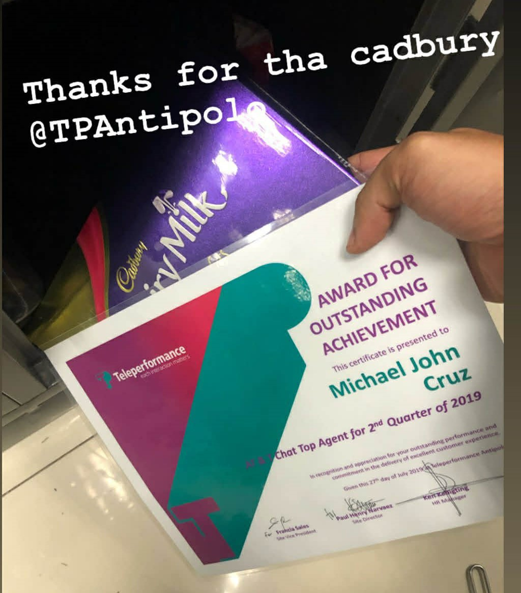

My Journey, Achievements and Commendations
My professional journey has been shaped by curiosity, hard work, and a constant drive to improve — both as a professional and as a person.
ThayerPC (August 2024 – Present)
I began my journey with ThayerPC as a Project Coordinator, responsible for creating commitments for Power Projects, supporting General Foremen and Foremen in their daily operations.
As I gained experience, I started building custom templates to streamline project creation, commitments, billing, and daily crew reports. I worked primarily with Procore and NetSuite, ensuring that all data and workflows were accurate and efficient.
Over time, I took on additional responsibilities — including Accounts Payable, productivity investigations, and process optimization. Eventually, I developed Python and Excel automations to simplify repetitive tasks, reduce human error, and improve reporting accuracy.
My dedication and consistent performance have been recognized by my superiors, including personal commendations from my boss praising my commitment to excellence.
Some of my client commendations in Thayer

Turn5 (2020 – 2024)
Before joining ThayerPC, I worked as a Product Images Procurement Specialist at Turn5, managing image sourcing and editing for major American automotive brands and aftermarket parts.
- I handled image procurement, Adobe Photoshop automation, and HTML-based product description copywriting. All product data and visuals were uploaded to our backend via VMware, ensuring each listing was accurate and visually optimized.
- I also:
- Created installation guides for each car part when available.
- Searched for and compiled YouTube installation videos to complement the guides.
- Managed product fitments, descriptions, and review keys, building database systems that linked similar product types for easier updates and quality consistency.:
During my five years at Turn5, I maintained perfect attendance and consistently received recognition for dedication, quality work, and process improvement.
Some of my client commendations in Turn5
AT&T Mobility (2018 – 2020)
My professional growth began at AT&T Mobility, where I started as a Technical Support Agent. Through consistent performance, I became one of the Top Agents for several consecutive months and earned a place in the AT&T Diamond List — recognizing top-performing agents across the organization.
Later, I was entrusted to train and mentor over 100 new hires, guiding them through troubleshooting, billing, sales, device unlocks, and international plan support.
When the pandemic struck, I made the difficult decision to step away to prioritize my family’s safety. That period became a turning point, inspiring me to continue improving and growing stronger when I returned to my professional path.
Some of my client commendations and Certificate in AT&T

When I handle and trained new hires
Getting top 1
When I got the Diamond lister Certificate.
Visited by our client. I am holding my certificate as a top 1 agent of AT&T Mobility

Family Business – Suman Delicacies of Antipolo
Beyond corporate life, I’ve always stayed grounded in my roots. Our family business in Antipolo, known for its famous “Suman” delicacies, taught me early lessons about leadership, discipline, and responsibility.
I managed production, inventory, distribution, and deliveries, gaining hands-on experience in operations and logistics. These lessons shaped my understanding of teamwork, customer satisfaction, and business sustainability.
Though my family continues to manage the business today, I carry those lessons with me — using them as the foundation for my professional values: hard work, accountability, and continuous growth.